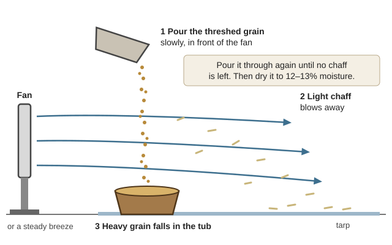
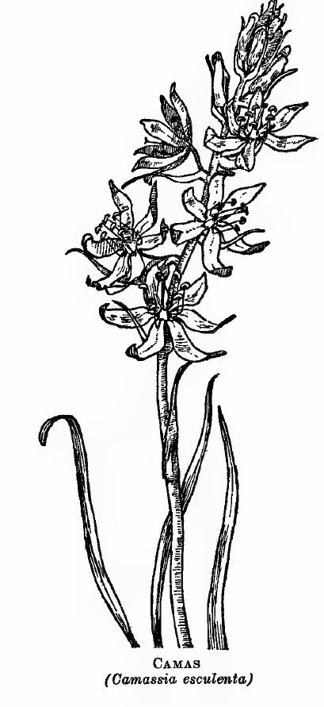
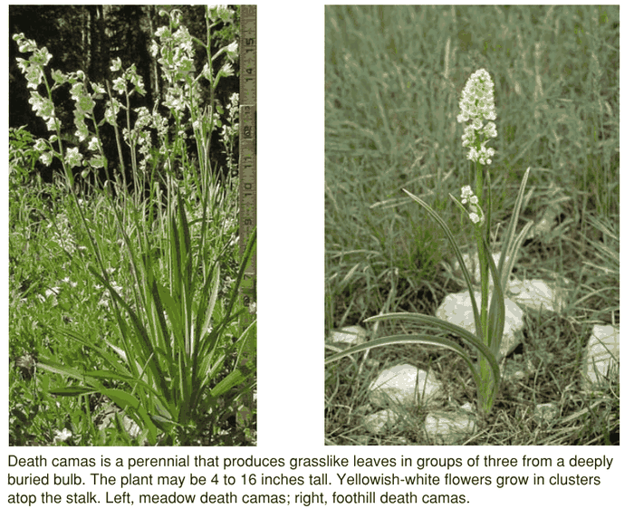
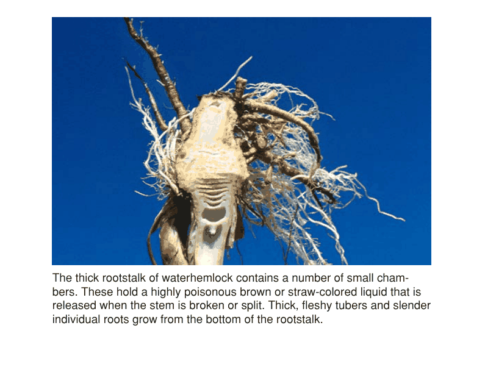
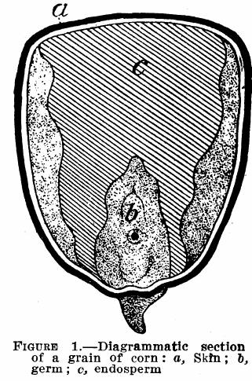
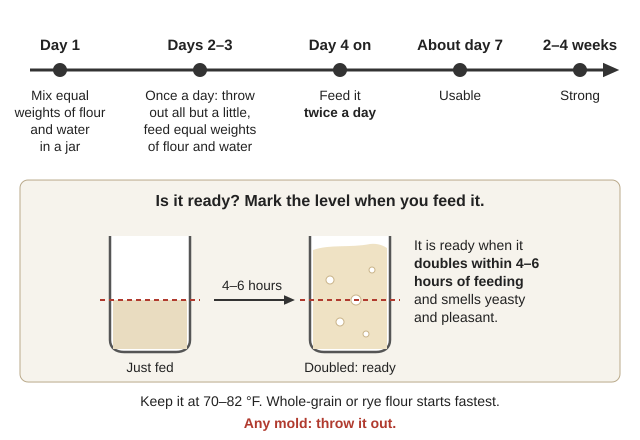

Guides › Food · Emergency · Index A–Z
How to make staple ingredients — flour, masa, leavening, salt, sweetener, fat — from what grows or can be raised around the Illinois Valley, and how to cook them: bread, tortillas, pasta and crackers, and the everyday meals that follow — broth and stew, beans, porridge and mush, pan breads and dumplings, roasts and pot-roasts, puddings, sauces — over a fire, on a stove, in an oven, in a hay box or in the sun. Details and more recipes are in Food-From-Scratch\ (grain, wild and local staples, breads and staples) and Gardening-Food\. The links open each book on the drive at the right page.
⚠️ Two foods here can kill if you get them wrong: camas has a deadly look-alike (death camas), and acorns and lye/ash-cooked corn must be processed properly. Follow the steps exactly, and never eat a wild plant you can't identify with certainty.
🍲 Don't know what to make with what's in the house? Open What can I cook? (under Tools): tick the ingredients you have and what you can cook on, and it lists the meals you can make now, the ones you're one thing short of, and the steps. Every recipe here is in it, with the book and page it came from.
| When | What to gather or make | Source |
|---|---|---|
| Spring | Cattail shoots, 4–16 inches long | Cattail guide, p. 1 |
| April–May | Death camas blooms (what it looks like) — watch and mark your camas bed now | PNW 104, p. 1 |
| Mid-April | Plant corn and potatoes (Rogue Valley advice — our valley floor frosts later; see the Start Here frost table) | OSU EM 9027, p. 22 |
| June–July | Hazelnuts — pick before the bears do | Hupa, p. 39 |
| Summer | Grain harvest; dig camas after it flowers | SARE; Camas, p. 1 |
| Late Sept–Nov | Acorns (the second fall); sugar pine nuts; bay nuts | UCCE, p. 2; Hupa, p. 40 |
| Cool months | Butcher and render (raw fat keeps only 5–7 days even chilled) | Minnesota, p. 2 |
| Leaf drop → bud break | Tap bigleaf maples on freeze–thaw days (how to tap) | OSU EM 9163, p. 3 |
📚 Go deeper: OSU Growing Your Own, p. 21 — gardening in southern Oregon; Food Plants of the North American Indians — 1,112 native food plants and how each was prepared.

Winnowing after threshing: the breeze carries off the light chaff and the grain drops into the tub; pour it through again until it's clean (a diagram drawn for this guide).Best-quality rotation times (sealed, about 70 °F; a 90 °F shed roughly halves them — USU, pp. 11, 17–19): whole wheat kernels 25 years · white flour 1 year · cornmeal 1 year · dry beans 1 year · whole-wheat flour only 2 weeks. USU says these are for rotating stock, not how long food stays usable; dry beans and rice packed with oxygen absorbers keep for decades (Food Security guide).
| If this goes wrong | Fix |
|---|---|
| Grain feels warm or smells musty | Too wet — spread it and dry it now; by the time you feel heat you're late (Peace Corps, p. 54) |
| Bugs after freezing | Thaw a sample on a tray; if anything crawls, freeze again (USU, p. 14) |
| "Bay leaves didn't work" | They don't — only clean, dry grain in tight containers stays bug-free (USU, p. 15) |
📚 Go deeper: Peace Corps Small Farm Grain Storage, p. 278 — drying, airtight storage and insects in depth; USU Food Storage in the Home, p. 13 — pest treatments and storage times; FAO Barley, p. 63 — barley breads and dishes.
📷 Not sure what it is? Photograph it with the plant and mushroom identifier (under Tools). It suggests names and flags poisonous groups, but it's often wrong: confirm every feature here before you eat or use anything.
Our oaks — tanoak (the traditional favorite), California black oak, Oregon white oak and canyon live oak (tanoak photo; oak and acorn drawing) — all make good flour, but every acorn must be leached to remove bitter tannins. A tanoak can drop over 200 pounds in a good year and bears some crop every year (NRCS Tanoak, p. 1).
Other local nuts need no leaching: hazelnuts (June–July, dry and eat raw; photo) and sugar pine nuts (October; pound the cones to free the seeds) — Hupa, pp. 39–40. Bay nuts (Oregon myrtle; peeled bay fruit) must be roasted at 350 °F for 30–45 minutes until dark-chocolate brown; they taste of coffee and contain a caffeine-like stimulant (UCCE, pp. 2–3).
📚 Go deeper: UCCE Foods from the Tanoak Forest, p. 2 — modern acorn and bay-nut processing step by step; Goddard, Life and Culture of the Hupa, p. 37 — how acorns were gathered, ground, leached and cooked just south of us; NRCS Tanoak guide, p. 2 — storage, leaching and acorn bread.
🌰 The local way: choosing oaks, storing, pounding, leaching in a sand basin and stone-boiled mush, as the valley's first peoples did it, are in Skills of the Valley's First Peoples.
Wild-Plants\ death camas guide; death camas flowers and leaves)| Camas (edible) | Death camas (deadly) | |
|---|---|---|
| Flowers | Blue-violet to creamy white, on a tall leafless stalk | Greenish to yellowish-white, in a pointed cluster |
| Height | 24–48 inches | 6–18 inch stem |
| Leaves | Long, narrow, grass-like | Grass-like, V-shaped, edged with stiff hairs |
| Bulb | Edible only after long cooking | Blackish scales, no onion smell — every part poisonous |
Sources: Camas guide, p. 2; PNW 104, pp. 1–2. Death camas drawn: Army survival manual; Air Force survival handbook. Some Oregon camas (great camas) is white-flowered — which is why color can't be trusted. Death camas symptoms start 1–8 hours after eating (drooling, vomiting, weakness, irregular heartbeat): get help at once.

Camas: open, six-petaled flowers spaced up a tall stalk above long, narrow leaves (Saunders, p. 44). The flowers are blue (this old drawing has no color); the bulbs look like death camas, so dig only plants you marked while they bloomed blue.
Death camas: small yellowish-white flowers crowded at the top of a short stalk, grass-like leaves; left, meadow death camas (AIB 415, p. 35).
Western water hemlock, the killer in wet ground: the thick rootstalk is hollow, with cross-walls making chambers full of poisonous juice (AIB 415, p. 110).📚 Go deeper: USDA Great Camas guide — harvest, cooking, drying; PNW 104 Meadow Deathcamas — identification photos; PNW 109 Western Waterhemlock, p. 3 — photo comparison with look-alikes.
Always cook dried corn with lime or wood ash ("nixtamal") before making it a staple — it unlocks the corn's niacin. People living mostly on untreated cornmeal get pellagra (FAO Maize, p. 13).

Inside a kernel: lime or lye loosens the skin (a) so it rubs off; the germ (b) holds most of the fat (FB 1236, p. 6).📚 Go deeper: Smithsonian Nixtamalization — the full masa method; USDA FB 1236 Corn and Its Uses, p. 11 — mush, pone, cornbreads and hominy; FAO Maize, p. 96 — tortillas and other corn recipes; Parker, Iroquois Uses of Maize, p. 115 — hominy, samp and old corn dishes.

The first weeks of a wild starter, and the doubling test that tells you it's ready (a diagram drawn for this guide).| Starter trouble | Fix |
|---|---|
| Not rising after a week | Somewhere warmer; switch to rye or whole-grain flour; avoid very hard or chlorinated water (Illinois, pp. 1–2) |
| Dark liquid on top ("hooch") | It's hungry — pour it off or stir it in, then feed (Illinois, p. 3) |
| Any mold | Throw it out; restart from your dried back-up (Illinois, p. 3) |
📚 Go deeper: Illinois Sourdough Bread 101, p. 4 — step-by-step loaf and schedules; UAF Sourdough, p. 3 — hotcakes, muffins and bread; USDA FB 807, p. 10 — potato yeast and saved dough.
Practical Action brief, p. 1). Never heat honey to dry it — blow air over a pan instead. Solid ("granulated") honey is fine. (pp. 3–4) Honey replaces sugar cup for cup in baking (FB 1136, p. 23).Practical Action brief, p. 2). Discard moldy nuts first; store oil dark and airtight, never in copper (pp. 1, 6; hand oil presses, p. 3).📚 Go deeper: OSU Making Bigleaf Maple Syrup, p. 3 — tapping, sanitation and bottling, with photos; Minnesota Making Lard at Home — rendering and what spoils lard; Practical Action Honey Processing — straining, moisture and wax; USDA FB 876 Making Butter — cream, churning and storage.
📚 Go deeper: PNW 632 Making Jerky at Home Safely — tested methods and the hot-brine recipe; NDSU Preservation of Game Meats and Fish, p. 5 — game jerky, smoking and curing.
Basic yeast bread — per loaf (USDA FB 807, pp. 13–17): 1 cup lukewarm liquid, about 3 cups flour, 1 tsp salt, 1 Tbsp sugar or honey, up to 1 Tbsp fat, and yeast (or ½ cup active sourdough starter in place of yeast and part of the liquid). Knead until smooth and springy, let it double, shape, let it rise again, and bake at about 400 °F for 40–50 minutes, until it sounds hollow when tapped. Stop adding flour once the dough doesn't stick to unfloured hands — too much flour makes heavy bread. Rise it covered, at about 80 °F; it's ready for the oven when a light touch leaves a slight dent.
Simple sourdough loaf: 1 cup active starter + 1 cup water + about 3 cups flour + 1½ tsp salt. Knead, let rise 4–8 hours (longer when cool), shape, rise 2–4 hours more, bake at about 425 °F for 35–45 minutes. Poke test: a floured finger-dent that springs back halfway means bake now; one that stays means over-risen — bake at once. A preheated Dutch oven (lid on 30 minutes, then off) gives a good crust without a real oven (Illinois, pp. 5–6).
Flour tortillas / flatbread: 2 cups flour, ¼ cup lard, 1 tsp salt, about ¾ cup warm water. Knead, rest 20 minutes, roll thin, cook on a hot dry pan 30–60 seconds a side. Works with part acorn or barley flour. Barley flatbread with no yeast: FAO Barley, p. 63.
Biscuits (USDA FB 1136, p. 23): 2 cups flour, 1 tsp salt, 2 tsp baking powder (or the soda and sour milk swap above), 2 Tbsp fat, ⅔–¾ cup liquid. Bake hot (about 450 °F) 12–15 minutes. Keep it all cold and handle it lightly. Too much soda makes them yellow and bad-tasting (p. 22).
Crackling bread: for each cup of cornmeal, ¾ tsp salt and ½ cup cracklings left from rendering lard; pour on boiling water until you can mash it by hand, shape into cakes and bake (FB 1236, p. 12).
Pasta / egg noodles: 2 cups flour, 1 egg + 2 yolks, ½ tsp salt, about ⅓ cup water (or the old way: one egg, a pinch of salt and enough flour for a very stiff dough). Knead 8–10 minutes, rest 10–20, roll paper-thin, cut ⅛–¼ inch strips. Cook fresh 2–4 minutes, dried 10–12. To store, dry until the noodles snap; keep airtight about a month (longer frozen). (Illinois Extension, p. 2; Fannie Farmer 1896, p. 167) Because of the raw egg, Illinois says don't air-dry over 2 hours — finish them at about 135 °F.
Hardtack (keeps for years): 3 parts flour to 1 part water (no salt — salt draws moisture and mold), stiff dough, ½ inch thick, prick with holes, bake 1 hour at 375 °F, then dry 3 more days. Soak or crumble into soup to eat. (City of Alexandria)
Beans: soak overnight (6 cups water + 2 tsp salt per pound) or quick-soak (boil 2 minutes, stand 1 hour), then simmer 2–4 hours. Old beans take longer; lentils and split peas need no soak. Beans + corn (or wheat) together make complete protein. Add tomatoes or vinegar only after they're tender — acid stops beans softening (USU, pp. 2–4). Canning beans needs a pressure canner: at Cave Junction's elevation a weighted-gauge canner runs at 15 lb (OSU EM 9435, p. 3).
Porridge and mush: cracked wheat, oats, barley, cornmeal or leached acorn meal simmered in about 3–4 times their volume of water with a pinch of salt. Hominy grits can finish overnight in a hay box (how to build one; its parts) after a 10-minute boil; coarse hominy needs longer on the fire first (FB 1236, p. 19).
📚 Go deeper: USDA FB 807 Bread and Bread Making, p. 12 — kneading, rising and baking; USDA FB 1136 Quick Breads and Biscuits, p. 22 — biscuits, muffins and griddle cakes; Fannie Farmer 1896, p. 92 — hundreds of everyday recipes; Practical Action Fireless Cookers, p. 5 — hay-box cooking times.
Every recipe below says what heat it needs. These are the heats a household has when the power is off.
| Heat | Best for | Watch for |
|---|---|---|
| Flames | Boiling water, searing the outside of meat | Never fry over flames — the grease burns and can catch fire (Kephart, p. 295) |
| Coals | Broiling, frying, pan bread, roasting in front of the fire | Rake a thin layer of coals out in front of the fire; small dry sticks make coals fast (Kephart, p. 295) |
| Wood stove top | Soups, stews, porridge, frying — anything a stove top does | Hottest over the firebox; the back of the stove is the slow spot (rule of thumb) |
| Oven | Bread, roasts, puddings, custards | No thermometer? The flour-on-a-plate test is under Staples above |
| Dutch oven or covered pot in coals | Bread, beans, braises, pot-roasts | Coals on the lid as well as under it (rule of thumb) |
| Reflector in front of the fire | Biscuits, roasts | Build the fire high; turn the pan when the front is done (Kephart, pp. 300, 351) |
| Hay box (fireless cooker) | Anything long and slow, after a hard boil | Food goes in boiling hot and must be reheated to boiling before eating (Practical Action, p. 5) |
| Solar oven | Slow baking on a sunny day | A well-made box reaches about 300 °F, and 400 °F on a hot summer day (Aprovecho, p. 7) |
| Ashes, or a pit of coals | Loaves, whole birds, camas, a pot left overnight | Try it on something cheap first — the heat and timing come only with practice (Kephart, pp. 301, 348) |
The four rules that make the difference:
⚠️ Hay box safety. A hay box holds heat; it does not make heat. Boil the food hard first — beans and meat 20–25 minutes, soft food about 3 minutes — then 2 to 2½ hours in the box for hard food and about 25 minutes for soft. Reheat it to boiling before eating. Meat and beans (kidney beans and chickpeas especially) are the risky ones, because food sitting between 40 °F and 140 °F grows bacteria. (Practical Action, p. 5; OSU EM 9331, p. 5)
Hay-box timings that work (FB 771, pp. 14–15): porridge and cereals — boil 10 minutes, in the box overnight, reheat in the morning · soup stock — boil 15 minutes, box overnight · pot roast — sear, cover with boiling water, boil gently 30 minutes (20 for a 3-lb roast), box overnight, reheat and box again till noon · green vegetables — two and a half times as long in the box as on the stove · potatoes in a boiled dinner only in the last hour and a quarter.
📚 Go deeper: USDA FB 771 Homemade Fireless Cookers, p. 14 — recipes and timings for the box; Practical Action Fireless Cookers, p. 5 — how to use one safely; Aprovecho Capturing Heat, p. 7 — a solar oven that really cooks; Kephart, Camping and Woodcraft, p. 295 — cooking over a fire, chapter and verse; Food When It's Scarce — cooking with little fuel.
Soup is how a household lives on bones, scraps and whatever the garden gave. Long, slow heat gets everything out of a bone, so soup is the natural job for the back of the stove and for the hay box (FB 771, p. 14).
Bone broth (brown soup stock) (stove top, the back of a slow fire, or a hay box · 7½ hours) — 6 lb of shin or any bony cut, 3 quarts cold water, ½ cup each of carrot, turnip, onion and celery cut in dice, 1 Tbsp salt, ½ tsp peppercorns, a few cloves, ½ bay leaf, a sprig or two of herbs.
(Fannie Farmer, p. 142) Don't salt a stock until it is half cooked, and set the pot far back on the stove so it comes to the boil slowly; five or six hours of simmering gets everything out of the bones (Household Discoveries, p. 805).
The same broth in a hay box: split the bones well or cut the meat small, cover with cold water, bring to a boil and boil 15 minutes, then into the box overnight. In the morning lift out the meat and bones, strain, skim the fat, season, bring back to a boil and return it to the box until dinner. One kettle of stock becomes vegetable soup, clear soup or noodle soup (FB 771, p. 14).
Stew with dumplings (stove top or a slow fire · about 3½ hours) — 5 lb of a bony, tough cut (beef, venison, goat or mutton), ½ cup flour, salt, pepper, 4 cups potatoes in slices, ½ cup each turnip and carrot in cubes, half a small onion sliced.
Bean or pea soup (stove top or hay box · 3–4 hours) — 1 pint of dry beans, 2 quarts cold water, a small onion, 2 stalks of celery, ½ Tbsp salt, pepper, mustard, 3 Tbsp butter or lard, 1½ Tbsp flour.
(Fannie Farmer, p. 157) Dried lima beans, peas and lentils make a good soup with no meat at all, and the long cooking they need suits a hay box exactly; cooked with less water, sieved and thinned with milk they become a "cream" soup (FB 771, p. 14). Left-over baked beans make soup too: simmer 3 cups of them with 3 pints of water, onion and celery for 30 minutes, sieve, and thicken (Fannie Farmer, p. 158).
Corn chowder (stove top · about 40 minutes) — a 1½-inch cube of fat salt pork, 1 sliced onion, 4 cups potatoes in ½-inch slices, 2 cups boiling water, 2 cups corn, 4 cups scalded milk, salt, pepper, 3 Tbsp butter, hardtack or crackers.
(Fannie Farmer, p. 163) Fish chowder is the same dish with 4 lb of fish instead of corn: simmer the head, tail and backbone in 2 cups of water for 20 minutes for the broth, add that and the fish to the potatoes, simmer 10 minutes, then add the milk, butter and crackers (pp. 163–164).
Broth for someone who is ill (a cool oven · 4–5 hours) — 3 lb of lean shin cut small, in a jar with seasoning and just enough water to cover; tie brown paper over the top and leave it in a cool oven 4–5 hours, then strain. It sets as a jelly when cold, and someone who cannot keep hot broth down can sometimes keep this down (Priceless Recipes, pp. 181–182). A beef-tea custard — a gill of broth, 2 egg yolks, 1 white, a pinch of salt, steamed 20 minutes in a buttered cup with the water never bubbling — is another way to get meat into someone who is weak (p. 181). Feeding someone who has been starving is its own subject: see Food When It's Scarce.
📚 Go deeper: Fannie Farmer 1896, p. 157 — soups made without any stock; USDA FB 771, p. 14 — soups and stews in a hay box; Household Discoveries, p. 805 — dozens of plain soups, including soup from left-over vegetables.
Dry beans keep for years, and beans with corn or wheat make a complete protein (Staples, above). Soaking and simmering are there too; these are the dishes.
⚠️ Boil beans hard before they go in a hay box or a solar oven — 20–25 minutes — and reheat to boiling before eating. Kidney beans and chickpeas are the ones that cause trouble when they sit warm (Practical Action, p. 5). Add tomatoes or vinegar only once the beans are tender, or they will never soften (USU, p. 3).
Baked beans (a slow oven, a Dutch oven in coals, or a bean hole · 6–8 hours) — 1 quart of small white beans, ½ lb fat salt pork, 1 Tbsp salt, 1 Tbsp molasses, 3 Tbsp sugar (honey or maple syrup does the same job), boiling water.
(Fannie Farmer, pp. 247–248) You do not need a bean pot: a five-pound lard pail works just as well (p. 248). In a pit, the same beans go in a covered kettle, the coals are raked around and over it, and it is buried overnight (Kephart, p. 301).
Hominy and bean cakes (stove top or coals · 15 minutes once the beans are cooked) — 1 cup boiled coarse hominy, 1 cup cooked beans, ½ cup milk, 1 Tbsp fat, ½ Tbsp cornstarch or flour, 1 tsp salt, a pinch of cayenne.
Four-vegetables-mixed (stove top or a fire · about an hour) — the winter dish of the Hidatsa gardeners, built entirely on things that store: dried beans, dried squash, parched corn and parched sunflower seed. It needs no meat, because the sunflower seed carries the fat.
Beans mashed in fat (stove top · 10 minutes): cooked beans mashed into hot lard or tallow with salt and a little of their own liquid, fried until they hold together, make a filling for flatbread and a way to use yesterday's pot (rule of thumb).
📚 Go deeper: USU Dry Beans and Peas, p. 3 — soaking, cooking and why acid stops them softening; OSU Preserving Dry Beans, p. 3 — drying and canning them.
Whole grain keeps for years and a sack of it is most of a winter's food. These are the ways it gets eaten day after day without anyone minding.
Cornmeal mush (a double boiler or the back of a stove · 30 minutes to 4 hours) — per cup of cornmeal: 1 to 1½ level tsp salt and 3½ to 6½ cups of water (more water the longer you cook it). Milk can replace part or all of the water.
(FB 1236, p. 11) In a hay box: boil it 10 minutes at night, leave it in the box overnight, and reheat in the morning (FB 771, p. 14).
Three ways to make mush into another meal (FB 1236, p. 12):
Polenta with a sauce (stove top · 20 minutes after the mush is made) — mush, reheated in a sauce and sprinkled with cheese. Cut it small so the sauce gets through it.
Coarse hominy or samp (hay box, double boiler, or over the fire · 2 to 12 hours) — 1 cup coarse hominy, 6 cups boiling water, 3 tsp salt.
(FB 1236, p. 19) Hominy grits: 1 cup grits to 5 cups water and 2 tsp salt — add the grits slowly to the boiling salted water, boil 10 minutes, then overnight in the hay box or 2 hours in a double boiler (same page). Hominy turnover (a supper from a pint of cooked hominy, 1 cup milk, 2 beaten eggs, 1 Tbsp fat, 1 tsp salt, stirred in a greased pan until hot, browned on the bottom and folded like an omelet) and scalloped hominy (layers of hominy and minced meat, fish or grated cheese under a cup of white sauce, baked 30 minutes) are on the same page.
The older way with whole corn (Parker, pp. 115–116): coarse pounded corn, 1 part meal to 8 parts water, boiled 2 hours, with meat and beans cooked in it; or hulled corn, washed free of skins and hulls, put in cold water and boiled 4 hours until the kernels burst open, with small chunks of meat and fat thrown into the boiling liquid. ⚠️ Corn that will be a daily staple must first be cooked with lime or ash (Corn, above), or people get pellagra.
Barley (stove top · ½–¾ hour): simmer barley in about four times its volume of water until just tender, half to three-quarters of an hour, then sweeten it, or use it in soup or in place of rice (FAO Barley, p. 63). Barley water for the sick or for thinning milk: ¼ cup pearl barley and 1 quart water with lemon rind, simmered covered on the lowest heat for two hours, then strained (same page).
Acorn mush and acorn bread (stone-boiling, a hot flat rock, an earth oven or hot stones): leached acorn meal (see Acorn flour, above) mixed with water and cooked makes porridge and a thick soup; poured onto a hot flat rock it makes pancakes and bread. Acorn cakes about 3 inches across were wrapped between two layers of grass and cooked overnight in an earth oven, and a dry acorn bread baked on hot stones kept for a month or more (NRCS Tanoak, p. 2).
📚 Go deeper: USDA FB 1236 Corn and Its Uses, p. 11 — mush, polenta, hominy and the breads; FAO Barley, p. 63 — soups, breads, puddings and drinks from barley; Parker, Iroquois Uses of Maize, p. 115 — dozens of corn dishes as they were really made.
Bread with no oven, and the quick things that turn flour and meal into a meal. Yeast bread, sourdough, biscuits, flatbread, hardtack and noodles are under Staples, above.
Bannock (camp bread) (a frying pan propped in front of coals, a reflector, or a covered pot · 25–40 minutes) — enough for four: 3 pints flour, 3 heaping tsp baking powder, 1 heaping tsp salt, 2 heaping Tbsp cold grease (lard, pork fat, drippings or tallow), 1 scant pint cold water.
(Kephart, pp. 348, 351) Left over and dry, sprinkle it with water and heat it through — once only (p. 351). The same dough rolled ¾ inch thick and cut out makes two dozen biscuits in a reflector (same page).
Ash bread (damper) (a fire's own ashes · until done): build a good fire on level ground, let it burn to coals and heat the earth, rake the embers aside, drop the loaf on the hot ground, pat it smooth, rake hot ashes and then embers back over it, and leave it until a sliver comes out clean. It is not dirty; brush it off (Kephart, p. 348).
Corn pone and corn dodgers (a Dutch oven, an oven, or a hot frying pan · about 45 minutes + 15) — 1 quart cornmeal, 1 tsp salt, 1 pint warm (not scalding) water — 1¼ pints if the meal is old.
(Kephart, p. 356) Plain corn bread with no flour, milk or egg is hard to get right without a Dutch oven, and is usually spoiled by being baked too fast and not long enough to be done inside (same page). The milk-and-soda version — 2 cups cornmeal, ¾ cup water, ½ cup sour milk or buttermilk, ½ tsp soda, 1 tsp salt, 1 Tbsp sugar, 2 tsp baking powder, shaped into cakes and baked in a hot greased pan in a hot oven — is in FB 1236, p. 12.
Dumplings (steam over boiling water, or on top of a stew · 12 minutes) — 2 cups flour, 4 tsp baking powder, ½ tsp salt, 2 tsp butter or lard, ¾ cup milk.
Corn dumplings (a pot of boiling water or a pot of boiling meat · 30 minutes): moisten cornmeal with boiling water, shape it quickly into cakes in a closed hand dipped in cold water, drop them one by one into boiling water and boil half an hour. They were the favourite thing to cook with boiling meat, especially game birds — speared out of the pot on a sharp stick and nibbled with the meat (Parker, p. 115).
Flapjacks (a hot pan over a thin bed of coals · a minute or two each) — 1 quart flour, 1 tsp salt, 2 tsp sugar or 4 of molasses, 2 level Tbsp baking powder, 2 heaped Tbsp grease rubbed in dry (leave the grease out if you have none), and milk or water.
(Kephart, p. 359) For sourdough hotcakes, stir ½ tsp of baking soda dissolved in 1 Tbsp of water into the batter last (Leavening, above).
Rieska — unleavened barley bread (a hot oven · 30 minutes) — ½ cup buttermilk (or any liquid), ½ cup cream, ½ tsp salt, ½ tsp sugar, 1 cup barley flour, 1 Tbsp melted butter. Mix the liquids, beat in the flour until smooth, add the butter, pour into a buttered 9-inch round pan — or spread the dough on cabbage leaves on a greased sheet — and bake at 450 °F for about 30 minutes. Serves 4–6. (FAO Barley, pp. 63–64)
Steamed bread, for a kitchen with no oven (a covered tin or can in a kettle of boiling water · 3½ hours) — 1 cup each of cornmeal, rye meal and graham flour, 1 tsp salt, soda and baking powder, ¾ cup molasses, 2 cups sour milk (or 1½ cups sweet milk). Mix and sift the dry things, add the molasses and milk, beat well, and steam 3½ hours in well-buttered covered tins; take the covers off and dry the top by the fire or in the oven (FB 1236, p. 13).
Fritters (a deep pan of hot fat · 3–5 minutes a batch) — batter: 1 cup flour, ½ tsp salt, ⅔ cup milk or water, 2 egg yolks, 1 Tbsp melted fat, and 2 egg whites beaten stiff and folded in last. Stir in sliced sour apples (or corn, cooked beans, or chopped greens), drop by spoonfuls into hot deep fat, fry, and drain (Fannie Farmer, p. 347).
📚 Go deeper: Kephart, Camping and Woodcraft, p. 348 — breadstuffs over a fire, in detail; USDA FB 1136 Quick Breads and Biscuits, p. 22 — muffins, griddle cakes and biscuits; UAF Sourdough, p. 3 — hotcakes and muffins from a starter.
Most of the meat a household eats is tough, because most of an animal is tough and the tender part is small. Tough meat is not worse meat — it just needs water, a lid and time.
Broiling, for tender pieces only (a bed of bright coals · 5–20 minutes): cut the meat at least an inch thick. Have clear coals with a flaming fire to one side. Sear the outside in the flame for a moment, then broil it in front of the fire rather than over it, with a pan underneath for the drippings. 1 inch thick — 5 minutes · 1¼ inches — 10 minutes · 2 inches — 20 minutes. Do not season until it is done. Venison usually wants pounding first, but do not gash it. (Kephart, p. 297) With no broiler, get a clean frying pan almost red hot, cover it, and turn the meat often without stabbing it: a large venison steak is done in 10 minutes, and the juices are saved (same page). Kabobs when you are in a hurry: 1½–2-inch pieces off the saddle, pounded, cut small, speared on a sharpened stick, salted and peppered, plunged into a bright flame for a moment and then toasted slowly over the embers — eat one while the next toasts (p. 300).
Braising, for everything else (a Dutch oven or any covered pot, on coals or a stove · 15 minutes to the pound) —
(Kephart, p. 301) In an oven the same thing takes longer and comes out better: 3 lb from the round or rump, seasoned, floured and browned all over in pork fat, set on a trivet in a deep pan, surrounded with diced carrot, turnip, onion and celery and 3 cups of boiling water, covered closely and baked 4 hours in a very slow oven, basted every half-hour and turned after two hours, the liquid kept below boiling throughout (Fannie Farmer, p. 217). When you turn meat, do not pierce it with a fork — the juices run out (same page).
Pot roast in a hay box (sear on the fire, then the box · overnight): sear the meat in hot fat, put it in the cooker kettle, cover with boiling water, boil gently 30 minutes (20 is enough for a 3-lb roast), and put it in the box overnight. Reheat in the morning, season, and return it to the box until noon. Thicken some of the liquor for gravy (FB 771, p. 15).
Pit baking (the bean hole) (a pit of coals · overnight):
An old hen, an old rooster, an old anything (a hay box overnight, or a covered pot on the stove until the meat leaves the bone): brown fricassee will reduce the toughest old fowl on the place to meat that falls off the bone. Joint the bird, roll the pieces in flour and brown them in fat, packing them into the kettle as they brown; make a gravy in the frying pan and add it with boiling water to cover; salt and pepper; boil 20 minutes; hay box overnight; reheat and return to the box until noon (FB 771, p. 15). To roast a bird you fear is tough, boil it 15–20 minutes, put it boiling hot into the box for 10 hours, then drain, wipe dry, stuff if you want, and roast it only long enough to brown (same page). Boiled fowl without a box: truss a 4-lb fowl, tie it in a cloth so the scum does not mark the skin, set it on a trivet half surrounded with boiling water, cover, and cook slowly until tender, salting in the last hour (Fannie Farmer, p. 255). A young bird can simply be broiled: split down the back, seasoned, in a greased broiler, 20 minutes over a clear fire, flesh side to the fire most of the time (same page).
Game (NDSU, p. 5): game is leaner and stronger-flavored than farm meat, and the strong flavor sits in the fat — trim it off. Then put fat back in another form (butter, lard, cream, bacon over the top) or it cooks dry. Do not overcook it. Tell a young bird from an old one at the joints: stiff joints and brittle bones mean an old bird, which must be braised or stewed; flexible joints and soft bones mean it can be fried. A plucked bird roasts without drying out because the fat under the skin melts into it; a skinned bird needs bacon over it, or a slice of bread dipped in egg and milk laid on top. Game takes the place of beef in any chili, soup or stew you already make.
Fresh sausage, from trimmings that would otherwise be dog food — ⅓ fat to ⅔ lean. A test batch: 4 lb trimmings, 5 tsp salt, 4 tsp ground sage, 2 tsp ground pepper, 1 tsp sugar, and if you like ½ tsp ground cloves or 1 tsp nutmeg. Mix the seasoning, spread it over the trimmings, and grind it all. For bulk sausage that slices and fries without crumbling, work a scant half cup of cold water into each 4 lb of ground seasoned meat until it is sticky and dough-like, pack it tightly into small pans, and chill before slicing (FB 2138, p. 45). Scrapple and head cheese — the dishes that use the rest of the head and trimmings — are in the Pigs guide.
⚠️ Hang game at least two days before you cook it, or it will be tough and tasteless; venison eaten before it has cooled right through causes diarrhoea (Kephart, p. 295). Pork, bear and cougar must be cooked through — see the Pigs guide and Jerky, above, for trichinosis. Drying and smoking are not cooking (PNW 632, p. 8).
📚 Go deeper: Kephart, Camping and Woodcraft, p. 295 — frying, broiling, roasting, braising and pit baking; NDSU Wild Side of the Menu 1 — game cookery and kitchen safety; Fannie Farmer 1896, p. 217 — braised beef, beef à la mode and stews; Hunting, Trapping & Fishing — getting the meat home in good shape.
Fish over coals (a moderate bed of coals · 10–20 minutes): rub the broiler with fat bacon so the fish does not stick. For a large fish, take the head off and split it down the back, not the belly, and lay strips of bacon or pork across it; broil over a moderate bed of coals so the inside cooks through without drying. Small fish are better cooked fast over hot coals, heads on. When it is done, salt and pepper it, spread butter, and hold it over the fire again until the butter melts. With no broiler, push a sharpened green stick through the mouth into the body and keep turning it over the coals, basting with drippings from a bit of bacon held on another stick above it. (Kephart, p. 326) Frying fish: wipe it dry or it soaks up grease, have the fat very hot, and put the pieces in one at a time so the heat does not drop (same page). Boiled fish, for a big one (stove top · until a fork goes in easily): ¾-fill a pot with water, add two large potatoes and about ½ cup of salt per 2-gallon pot, bring it to a boil, put the fish in, and cook until a fork goes through the flesh easily — 2 lb of fish for every 2 potatoes (NDSU, p. 10).
Eggs (Fannie Farmer, pp. 131, 134, 136): allow one egg per person and one tablespoon of liquid per egg.
A greens, bread and egg bake (a 350 °F oven · 40–45 minutes) — the dish that turns a handful of anything green into supper: 3 slices of bread cubed, 4 eggs, 1⅓ cups milk, ½ tsp each salt, pepper and ground mustard, 1 cup cooked chopped greens (blanched nettles, chard, beet tops), ¼ cup onion or chives, and whatever meat, fish or cheese you have.
Baked custard (a slow oven, the dish standing in a pan of hot water · until a knife comes out clean) — 4 cups scalded milk, 4 to 6 eggs, ⅓ cup sugar or honey, ¼ tsp salt, a grating of nutmeg. Beat the eggs slightly, add sugar and salt, pour the scalded milk on slowly, strain into a buttered dish, set it in a pan of hot water, and bake in a slow oven. Keep the water around the dish below boiling — eggs and milk together must be cooked at a low temperature, or the custard turns to whey (Fannie Farmer, pp. 391–392).
Cheese, when there is cheese (FB 1451, pp. 12, 14): fresh curd is mild, so it takes flavor from whatever you put with it — horseradish, onion juice, parsley, chopped celery, ground sage; or honey, jam and dried fruit on the sweet side. A cheese roll is curd mixed with cold cooked rice or fresh bread crumbs and those seasonings, packed into a buttered dish, chilled, turned out and sliced; scraps of cooked meat or fish go in to stretch it further. Dry curd needs seasoning well. Grated hard cheese stirred into cornmeal mush makes a dish that needs no butter (above). Milk, butter, cheese-making, ricotta and whey are the Milk, Butter & Cheese guide.
📚 Go deeper: Kephart, p. 326 — fish over a fire, every way; Fannie Farmer 1896, p. 131 — eggs, omelets and custards; USDA FB 1451 Cottage Cheese, p. 12 — making it and cooking with it.
Garden and cellar vegetables need longer than most people think, and old ones longer again.
| Vegetable | Cooked on | How long |
|---|---|---|
| Beets, whole | boiling water | 1 to 4 hours — and old beets never go tender, however long you cook them |
| Shell (fresh) beans | boiling water, barely enough to cover | 1 to 1½ hours, salt in the last half-hour |
| String beans | boiling water | 1 to 3 hours, salt in the last half-hour |
| Winter squash and pumpkin | a strainer over boiling water | 30 minutes, then mash with fat, salt and pepper |
| Carrots, in dice | boiling salted water | 30 minutes young, 45 old |
| Greens — beet tops, dandelion, turnip tops | a little boiling salted water | 1 hour, then butter, salt, pepper and a splash of vinegar |
| Nettles | a rolling boil | 1½ to 2 minutes, then cold water; that kills the sting |
| Anything, in a hay box | boil first, then the box | 2½ times the stove-top time |
Sources: Fannie Farmer, pp. 292, 299, 306; OSU EM 9373, p. 4; Household Discoveries, p. 891; FB 771, p. 15.
Nettles, start to finish (a big pot of boiling water · 2 minutes, plus 2 in cold water): wear long sleeves and rubber gloves to pick and handle them. Bring a gallon of water and a pinch of salt to a rolling boil, put the leaves in, boil 1½–2 minutes, lift them out with tongs into cold water for 2 minutes, drain, and squeeze the water out. From there they are a cooked green: in the bake above, in soup, in a pan with fat and onion, or chopped fine with nuts, garlic, oil and hard cheese as a sauce for noodles — which keeps only 4 days in a cold place, or frozen, because greens in oil can grow botulism. Drying them: 95–115 °F until crisp, then airtight in the dark; best used within 6 months. (OSU EM 9373, pp. 3–4)
A boiled dinner in one kettle (stove top and a hay box · overnight plus the morning): cook a piece of corned beef or salt pork in the box overnight; in the morning add every vegetable you have — the more kinds the better — boil 10–15 minutes and return it to the box; put the potatoes in only an hour and a quarter before the meal, and bring it back to a boil when they go in. If the salt meat was parboiled first, the liquid makes a good soup (FB 771, p. 15).
From the cellar in late winter: dried squash and dried corn go into soups and the winter dish under Beans, above. Sprouting potatoes and soft roots are still food — rub the sprouts off and cut away every green part, which is toxic (why) — then boil them. Keeping it all this long is the Root Cellar guide; mushrooms, how to cook and dry them, are in the Mushroom guide.
📚 Go deeper: Fannie Farmer 1896, p. 292 — every common vegetable and how long it takes; OSU Wild Edibles: Stinging Nettle — gathering, blanching, freezing, drying and four recipes; Household Discoveries, p. 891 — plain vegetable cookery.
Apples, pears and plums keep in a cellar or dried; grain, milk, eggs, honey and syrup make them into puddings. A sweet dish at the end of a hard week does more good than its calories.
Scalloped apples (a moderate oven · 40 minutes) — a small stale loaf, ½ cup butter or lard, 1 quart sliced apples, ½ cup sugar or honey, ½ tsp grated nutmeg, the grated rind and juice of half a lemon if you have one.
Steamed apple pudding — no oven needed (a covered tin or a five-pound lard pail in a kettle of boiling water · 1 hour 20 minutes) — 2 cups flour, 4 tsp baking powder, ¼ tsp salt, 2 Tbsp butter or lard, ¾ cup milk, 4 apples cut in eighths, 1 Tbsp sugar mixed with ¼ tsp each salt and nutmeg.
(Fannie Farmer, p. 378) The same dough and method takes berries — a cup of berries rolled in flour with a cup of milk (same page).
Indian pudding (a slow oven · 2 hours, after 20 minutes on the stove) — 5 cups scalded milk, ⅓ cup cornmeal, ½ cup molasses, 1 tsp salt, 1 tsp ginger. Pour the milk slowly on the meal, cook it in a double boiler 20 minutes, add the molasses, salt and ginger, pour it into a greased dish and bake 2 hours in a slow oven. Serve with cream. If it is baked too fast it will not whey properly (Fannie Farmer, p. 372).
Rice pudding, and poor man's pudding (a very slow oven · 3 hours) — 4 cups milk, ½ cup rice, ⅓ cup sugar, ¼ tsp salt, grated lemon rind. Wash the rice, mix everything, pour it into a greased dish, and bake 3 hours in a very slow oven, stirring three times in the first hour so the rice does not settle. Poor man's pudding is the same with ⅓ cup molasses in place of the sugar, ¼ tsp cinnamon, and a tablespoon of butter stirred in at the last stir (Fannie Farmer, p. 372).
Bread pudding, for stale bread (a slow oven · 1 hour) — 2 cups stale bread crumbs, 1 quart scalded milk, ½ cup sugar or honey, ¼ cup melted butter, 2 eggs, ¼ tsp salt, a little spice. Soak the crumbs in the milk and let it cool; add the rest with the eggs beaten slightly; bake 1 hour in a greased dish in a slow oven. Leave the outside crusts out of pudding crumbs (Fannie Farmer, p. 374).
Nuts: hazelnuts and sugar pine nuts need no treatment (Acorn flour, above). Pounded parched nut meal mixed with parched corn meal makes a pottage, and nut milk was used with corn the way we use dairy milk (Parker, p. 117).
⚠️ Elderberries are never eaten raw. Raw berries and raw juice release cyanide as they are digested: nausea, vomiting, cramps and weakness, and people have been hospitalised. Cooking removes the risk. Berries that are dried or frozen raw must still be cooked before anyone eats them. (OSU EM 9446, p. 4) Our blue elderberry is high in acid and can be canned as juice, syrup or jam with ordinary high-acid recipes; the eastern kinds cannot (p. 2). Canning times and the jam rules are in the Preserving Food guide.
📚 Go deeper: Fannie Farmer 1896, p. 372 — the hot-pudding chapter; OSU Play It Safe When Preserving Elderberries — which elderberries are safe in which recipe; OSU Picking and Storing Apples and Pears — when to pick and how to keep them.
The difference between a dull winter and a bearable one is sauce, salt and a change of flavor. The same beans, meal and roots can be a different meal every day.
White sauce, the one sauce to know (stove top · 5 minutes) — per cup of milk: 2 Tbsp butter or lard, ¼ tsp salt, pepper, and flour according to how thick you want it — 1½ Tbsp thin (for soups and creamed dishes), 2 Tbsp medium, 3 Tbsp thick (to bind cakes and croquettes).
(Fannie Farmer, p. 273) It carries any cooked thing: hominy, greens, fish, eggs, scraps of meat, dried mushrooms.
Pan gravy (the pot you cooked in · 5 minutes): pour the grease off, add a little water and salt to what is left, and rub flour in gradually with a spoon (Kephart, p. 301). On bread, mush or potatoes this is a meal in itself.
Tomato sauce and savory sauce (above, under Porridge) go on anything, not just polenta: 2 Tbsp fat, 2 Tbsp flour and a cup of strained tomato for the first; salt pork or bacon crisped with onion and pepper, then a cup of tomato cooked down, for the second (FB 1236, pp. 11–12).
A basting mop for anything roasting over a fire (simmered, then brushed on) — 1 pint vinegar, half a can of tomatoes (about a cupful), 2 tsp red pepper (chopped pods are better), 1 tsp black pepper, 1 tsp salt, 2 Tbsp butter, simmered together until it comes together. Tie a clean rag on a stick and keep the meat basted the whole time it is on the fire (Kephart, p. 300).
Salt, and when to add it:
Flavor out of nothing much:
📚 Go deeper: Fannie Farmer 1896, p. 273 — the sauce chapter; Household Discoveries, p. 851 — a whole chapter on making left-overs into something people want to eat.
Men who carried nothing they could do without lived on four things: flour, bacon, baking powder and salt (Kephart, p. 356). Here is what those four, or fewer, will make.
A steady diet of baking-powder bread is hard on people; that is what sourdough and saved dough are for (Kephart, p. 196, and Leavening, above).
📚 Go deeper: Kephart, Camping and Woodcraft, p. 356 — corn pone, dodgers, ash cake and johnny-cake; Food When It's Scarce — rationing, nutrition and hunger diseases.
Old recipes in these books are fine for methods; for food safety (canning, curing, storing) follow the modern USDA guides in Gardening-Food\.
Look before you try it. 🖼️ = drawings in the books on this drive; 📷 = photos in the offline Wikipedia.
Grain: threshing, grinding, pests
Acorns and nuts
Camas, cattail and their deadly look-alikes
Corn
Syrup, oil, lard and butter
Jerky, bread and slow cooking